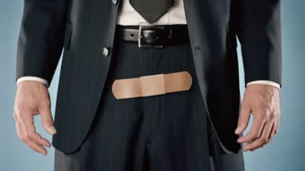

Rod Berne is a student, writer, and thought criminal. His columns run every Saturday. Follow him on Twitter.


Circumcision is a procedure done on men throughout the world. It is a controversial operation that some claim has many benefits with no downsides, while others claim circumcision is abusive and causes severe damage. Which one of these two beliefs is closer to the truth? First this article will outline the reasons circumcision is performed. Second, we’ll discuss the history of circumcision. Finally, we’ll talk about the two types of harm that circumcision might cause men.
Why does the color of the USA match the colors of much worse countries?
According to the World Health Organization, approximately 30% of the world’s males are circumcised. In the U.S., circumcision rates range between 50-60%. For comparison, the rate in Germany is 11%, France 14%, and the U.K. 16%.
Why is the U.S. so much different than the rest of the Western world on this issue? Our rates of circumcision are closer to Middle Eastern countries like Saudi Arabia and Israel (80-90%) than Europe.
America has a long and strange history with circumcision. It is currently the most common surgical operation done in the U.S. and between 2-10% of circumcisions result in complications.
In the late 19th century, in the U.S., circumcision was widely promoted and was seen as a cure for masturbation. John Harvey Kellogg, a chief proponent of circumcision, advocated in Plain Facts for Young and Old (1881) that circumcision should be performed without anesthesia as the pain would have a “salutary effect on the mind.” The argument was that the pain associated with circumcision would deter the boy from touching his penis. In the late 19th century, Victorian-era doctors described the male foreskin as a “source of serious mischief.”
These doctors believed that masturbation led to insanity. They thought that the sensitive, responsive foreskin stimulated masturbation, and surgeons promoted “therapeutic” circumcision to cure young men of the “sin” of excessive indulgence and prevent the potential for, “masturbatory insanity,” a catchall phrase for various psychiatric and physical disorders that perplexed physicians.
John Kellogg believed his bland invention would suppress sexual appetite
Furthermore, John Kellogg invented Corn Flakes breakfast cereal in 1878. He hoped that feeding children this plain cereal every morning would help to combat the urges of “self-abuse”.
While today some say circumcision prevents HIV transmission and other risks, others say circumcision has long been, in America, a cultural practice looking for a medical justification.
Don’t worry– she’s seen it all
Among women, uncircumcised penises get something of a bad rap, being described as unattractive and undesirable. The confluence of medicine and popular opinion serve to perpetuate the societal norm.
Still, it is an unnecessary surgery performed on a person unable to give consent. One might argue that it violates the most basic assumptions of medical ethics. Why are we allowed to perform an unnecessary operation on a human who is not yet able to provide consent? It seems odd that for Western women who are obsessed with consent, they are perfectly happy to perform a pseudo-castration on a boy without his permission.
There is a well-known stigma, at least among middle-class women, of uncircumcised penises. Some women claim that they are less attractive and are averse to giving blowjobs if they see that a guy is uncut. In this article in Cosmopolitan, several women are interviewed and while they say that they generally prefer the appearance of a circumcised penis, there also either a neutral or enhanced effect on their sexual pleasure when having sex with an uncircumcised man.
A couple of insightful quotes from the Cosmo sluts:
I feel like there is a little something extra when a man is not circumcised. It’s almost like being “ribbed for her pleasure.” I don’t think it necessarily makes it better than a circumcised man, but it is a little different. I also think the after-sex rituals are different. Usually, when a guy is not circumcised, he has to get up and clean off sooner.
And:
I have a decent sample size of both intact and circumcised men, and while I have had circumcised men be able to get me off from vaginal intercourse alone, it’s only been after plenty of getting to know each other sexually. The uncircumcised men have been the only ones who I orgasm from vaginal intercourse alone easily, even during casual encounters. The gliding sensation from the foreskin just does it for me.
With the advent of digital porn, you can rest assured that whether your penis is cut or uncut, Western sluts will have seen all varieties of male genitalia by the time they are sexually active.

There are two types of possible harm that might be done to a male who has undergone circumcision as a baby: damage to the body and damage to the psyche.
The foreskin is densely filled with nerve endings and is an erogenous zone. By removing the foreskin, circumcision weakens the range of sensations that a man is able to have when having sex. It is also believed to serve other functions, like protecting and lubricating the head of the penis and maintaining its sensitivity, similar to the way an eyelid protects the eye.
There are multiple studies indicating that circumcision may have a negative effect on sexual functioning. In one study done in Britain, researchers found that the head of the circumcised penis is less sensitive to touch than the glans of the uncircumcised penis. According to this study, circumcision erodes the most sensitive parts of the penis. If you leave a naturally moist and sensitive body part in the exposed air, it makes sense that it would grow less sensitive over time.
In another study, researchers surveyed 123 men who had undergone circumcision as adults. They found that following their operation, erectile dysfunction increased and penile sensitivity decreased.
Finally, an interesting study in Denmark found that circumcised men reported more sexual partners than uncut men. However, they were also more likely to admit to frequent orgasm difficulties, likely due to reduced sensitivity. Women with circumcised husbands more often reported incomplete sexual needs fulfillment and frequent sexual function difficulties overall.
The second consequence of circumcision on men is psychological trauma. Circumcision is frequently done on babies without anesthetic. One can imagine the severe amount of pain an infant experiences during this operation.
Research has demonstrated the hormone cortisol, which is linked to stress and pain, sharply increases during circumcision. Although some believe that babies “won’t remember” the pain, we now know that the body “remembers” as evidenced by studies which demonstrate that circumcised infants are more sensitive to pain later in life.
It seems that the claims of various organizations, including the Centers for Disease Control and Prevention (CDC) that “the scientific evidence is clear that the benefits outweigh the risks” is a flimsy statement that is not entirely rooted in truth.
Read More: 4 Reasons Why Child Circumcision Should Be Banned